Hello World This page shows how to create your Hello World app using the Scout SDK. We assume that you already have installed Scout.
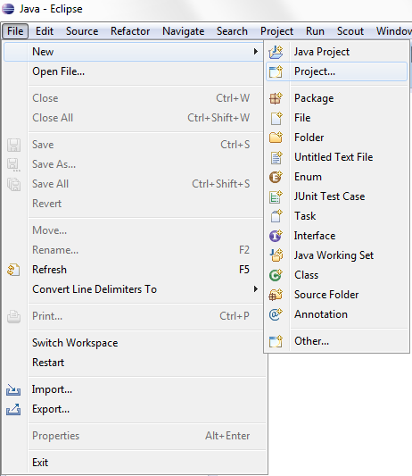
Start your Eclipse and Use the New|Project ... menu
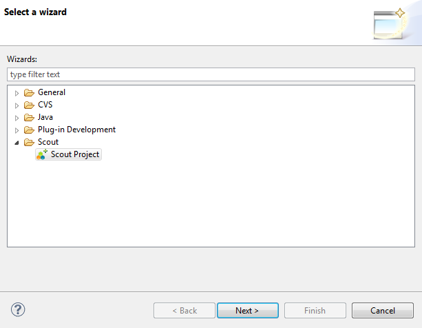
In the wizard choose Scout project and click Next
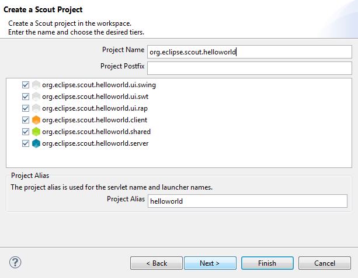
Enter org.eclipse.scout.helloworld as an application name. The last part of the name (after the last period) will automatically be used as the project alias. Then, click Next
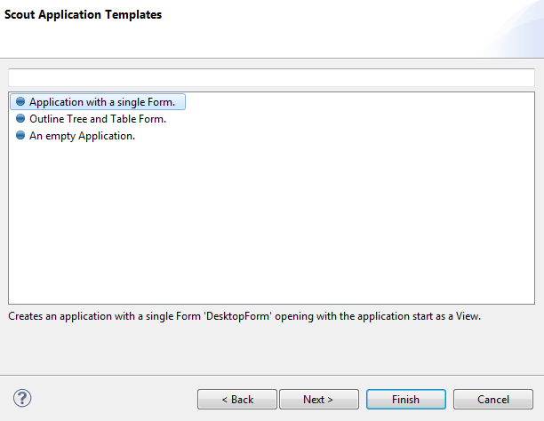
Select Application with a single form as your app template, then click Finish
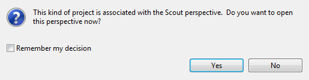
The empty application is created by Scout SDK and if you are not already in the Scout perspective you are prompted to change there now, click on Yes
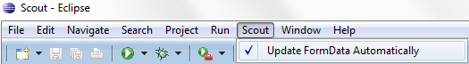
Make sure you have switched on the automatic formdata update in menu Scout|Update Formdata Automatically
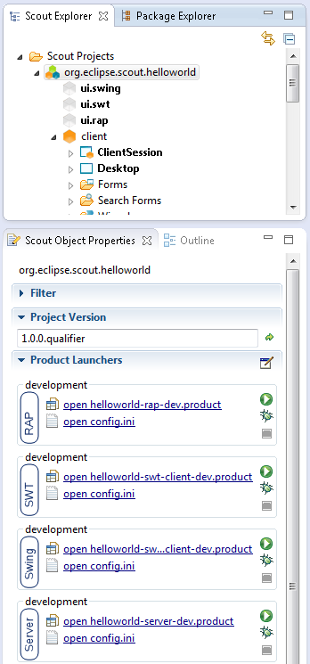
In the Scout Explorer open the node Scout Projects, then click on org.eclipse.scout.helloworld. This will show the Scout Object Properties for the application.
After starting first the server (1) and then the Swing client (2) from the launching boxes as shown below, the empty client will appear.
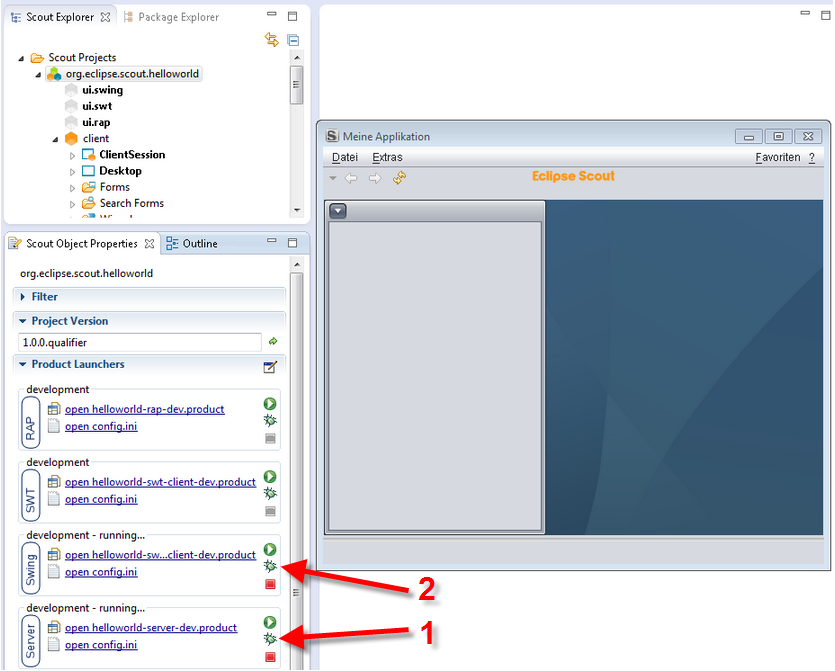
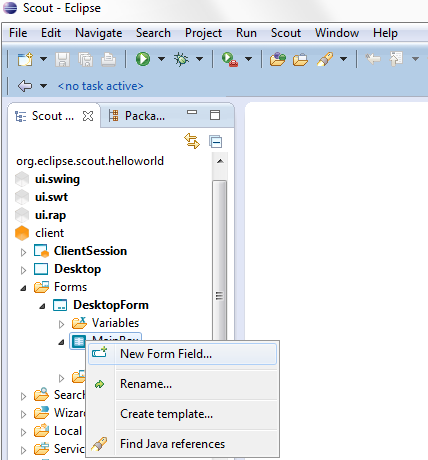
In the Scout Explorer drill down to client, Forms, DesktopForm, MainBox
To the main box we will add a message field. Click right on MainBox and choose the menu New Form Field.
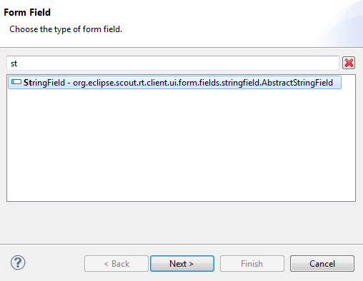
Step 1: Select field type. Here we'll use a String Field. Then click Next (you may directly click on it or use the search box as shown above)
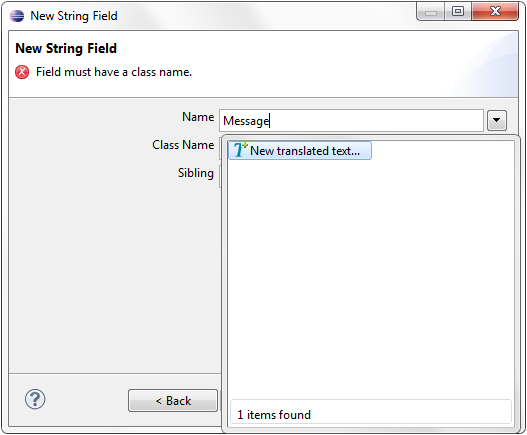
Step 2: Add the field label, type "Message" that triggers the dropdown list. Choose New translated text... (or use an existing text)
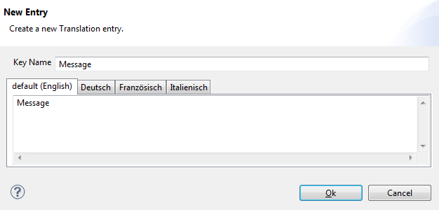
Step 3: Fill in the default translation. Some other fields are automatically filled:
Then click OK
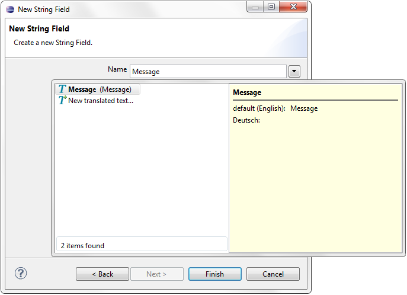
Step 4: Verify details of the new string field by clicking again into the Text: The bold title is the key name and all translations should be shown
Confirm by clicking Finish
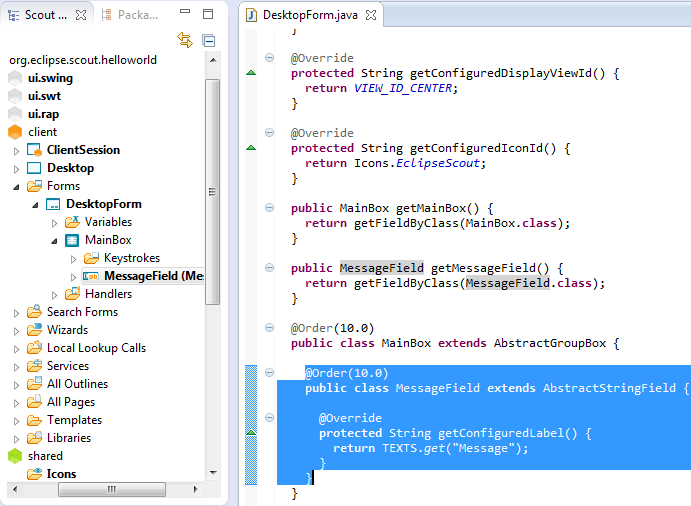
Navigate down from the MainBox to the newly created MessageField. Double click on the MessageField node to display the generated code (selected code in screenshot above) in the Java editor window.
In the Scout Explorer navigate to the server node, then Process Services, and DesktopProcessService. The DesktopProcessService is the server side service corresponding to the DesktopForm defined on the client side. This process service was created as part of the selected application template. The load(DesktopFormData) method is defined out of the box.
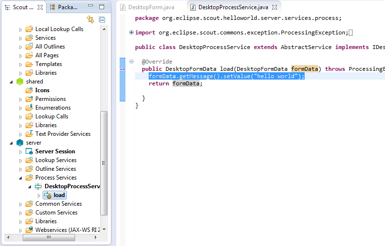
Add a simple implementation for the load method:
public DesktopFormData load(DesktopFormData formData) throws ProcessingException {
formData.getMessage().setValue("hello world");
return formData;
}
On line 2 we access the message field of the FormData and set its value to "hello world". The updated form data is returned and eventually sent back to the client.
In the Scout Explorer go back to top-level node Scout Projects, then click on org.eclipse.scout.helloworld to access the launch boxes in the Scout Object Properties.
And, "Ta Taa"
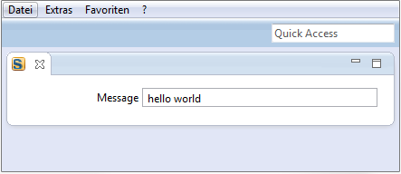